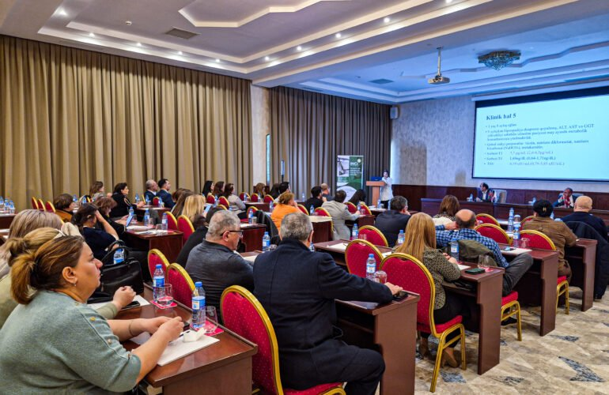

Protein electrophoresis and oligoclonal band testing in Baku: introducing HYDRASYS 2 SCAN
Protein electrophoresis and oligoclonal band testing on the HYDRASYS 2 SCAN system are now available at İnci Laboratories.
Reliable, accurate testing across every field of clinical laboratory diagnostics — fully automated analysers, international standards and a range of 4000+ tests.
From medical biochemistry to molecular microbiology — 10 laboratory fields under one roof.

Measurement of biochemical markers in blood and other body fluids, such as glucose, lipids, enzymes, and liver and kidney function.

Testing of immune status, autoimmune diseases and antibodies to infections.

Accurate diagnosis through histological and cytological examination of tissue and cell samples.

Complete blood count, blood cell morphology and assessment of blood clotting.

Early detection of cancer and treatment monitoring through tumour markers.

Laboratory testing for sensitivity to food, pollen, house dust and other allergens.

Safer treatment by monitoring drug levels in the blood and detecting toxic substances.

Screening of mother and baby during pregnancy, and of newborns for congenital conditions.

Culture-based detection of bacterial and fungal infections and antibiotic susceptibility testing.

Precise DNA/RNA-level detection of viruses and bacteria by PCR and other molecular methods.
Book online, call *1113 or message us on WhatsApp.
Your sample is taken at a branch or at home.
On fully automated analysers, to international standards.
Your result is delivered online.
8 check-up packages by age, gender and need. Let's choose the right one together.

İnci Laboratories works in biochemistry, microbiology, immunology and molecular genetics using fully automated analysers. Our work follows quality standards set by independent bodies such as EUCAST, CLSI and ISO.
Protein electrophoresis and oligoclonal band testing on the HYDRASYS 2 SCAN system are now available at İnci Laboratories.

Our specialists took part in an international conference and shared their experience in laboratory diagnostics.

İnci Laboratories' laboratory and pathology services are now also available in Ganja.
Get in touch to book a visit, ask for advice or arrange a check-up.